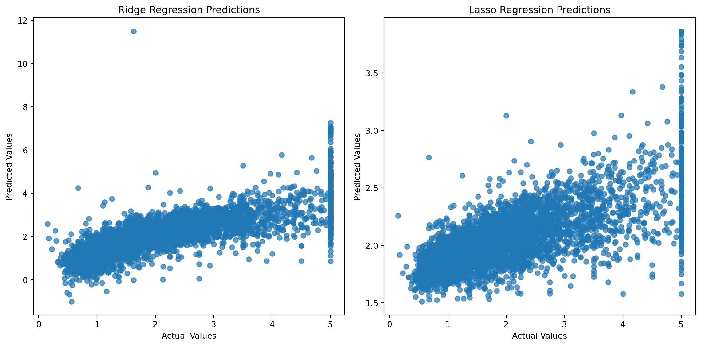
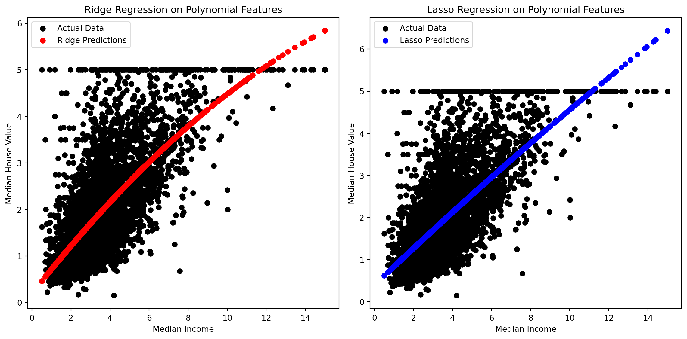

# Import necessary libraries
import numpy as np
import pandas as pd
from sklearn.datasets import fetch_california_housing
from sklearn.model_selection import train_test_split
from sklearn.linear_model import Ridge, Lasso
from sklearn.metrics import mean_squared_error, r2_score
import matplotlib.pyplot as plt
# Load the California Housing dataset from scikit-learn
from sklearn.datasets import fetch_california_housing
from sklearn.model_selection import train_test_split
california_housing = fetch_california_housing(as_frame=True)
california_df = california_housing.frame
# Select features and target
features = california_df.drop('MedHouseVal', axis=1) # 'MedHouseVal' is the correct column name
target = california_df['MedHouseVal']
# Split the dataset into training and testing sets
X_train, X_test, y_train, y_test = train_test_split(features, target, test_size=0.2, random_state=42)Title: Linear and Non Linear Regression.
Linear regression:
Linear regression stands as the cornerstone of predictive modeling. It’s a method that seeks to establish a linear relationship between a dependent variable and one or more independent variables. This relationship is expressed through a linear equation, allowing us to make predictions based on the observed data. Performing linear regression involves several steps. Here’s a general outline of the process:
Collect Data: A dataset with paired observations for the dependent and independent variables is desired.
Explore the Data: We need to understand the characteristics of the collected data. This may involve plotting the data, checking for outliers, and examining the distribution of variables.
Define Variables: Identify the dependent variable and the independent variables.
Split the Data: Divide your dataset into two subsets: one for training the model and one for testing the model. The training set is used to fit the model, and the testing set is used to evaluate its performance.
Build the Model: For simple linear regression (one independent variable), the model is represented as: y=mx+b. Use statistical methods or optimization algorithms (such as the least squares method) to find the coefficients that minimize the difference between predicted and actual values in the training set.
Evaluate the Model: Use the testing set to assess the model’s performance. Common evaluation metrics include mean squared error (MSE), root mean squared error (RMSE), and R-squared.
Interpret the Results: Analyze the coefficients to understand the relationship between the variables. A positive coefficient indicates a positive relationship, and a negative coefficient indicates a negative relationship.
Make Predictions: Once the model’s performance is satisfactory, predictions can be made on new data.
Validate Assumptions: Check whether the assumptions of linear regression are met. These assumptions include linearity, independence of errors, homoscedasticity (constant variance of errors), and normality of errors.
Machine Learning Code for Linear Regression: Let’s dive into the practical aspect with a Python script using the ubiquitous scikit-learn library. The California housing dataset is condidered.
This code crafts a narrative of linear regression using the California housing dataset, illuminating the relationship between selected features and house prices.
Linear regression is a powerful tool for predicting numerical values, but when dealing with datasets that have a large number of features, the risk of overfitting becomes significant. In such cases, regularization techniques like Ridge and Lasso Regression come to the rescue by introducing penalty terms to the cost function. In this blog post, we’ll delve into the California Housing dataset and compare the performance of Ridge and Lasso Regression.
The California Housing Dataset:
The California Housing dataset is a widely used dataset for regression tasks. It contains housing data for districts in California, including features such as median income, housing median age, average rooms, etc. Our goal is to predict the median house value for California districts.
Ridge Regression:
Ridge regression, also known as Tikhonov regularization, introduces an L2 regularization term to the cost function. This term penalizes large coefficients, helping to mitigate multicollinearity and produce a more robust model.
# Ridge Regression
from sklearn.linear_model import Ridge
from sklearn.metrics import mean_squared_error, r2_score
ridge_model = Ridge(alpha=1.0)
ridge_model.fit(X_train, y_train)
ridge_y_pred = ridge_model.predict(X_test)
ridge_mse = mean_squared_error(y_test, ridge_y_pred)
ridge_r2 = r2_score(y_test, ridge_y_pred)Lasso Regression:
Lasso regression, or Least Absolute Shrinkage and Selection Operator, uses an L1 regularization term. In addition to penalizing large coefficients, Lasso performs feature selection by pushing some coefficients to exactly zero.
# Lasso Regression
from sklearn.linear_model import Lasso
lasso_model = Lasso(alpha=1.0)
lasso_model.fit(X_train, y_train)
lasso_y_pred = lasso_model.predict(X_test)
lasso_mse = mean_squared_error(y_test, lasso_y_pred)
lasso_r2 = r2_score(y_test, lasso_y_pred)Visualization:
Visualizing the predictions allows us to gain insights into how well the models perform. Scatter plots of actual vs. predicted values reveal patterns and errors in the predictions.
Now, let’s compare the performance metrics to understand how well each model generalizes to new data.
# Visualize predictions
import matplotlib.pyplot as plt
plt.figure(figsize=(12, 6))
plt.subplot(1, 2, 1)
plt.scatter(y_test, ridge_y_pred, alpha=0.7)
plt.xlabel('Actual Values')
plt.ylabel('Predicted Values')
plt.title('Ridge Regression Predictions')
plt.subplot(1, 2, 2)
plt.scatter(y_test, lasso_y_pred, alpha=0.7)
plt.xlabel('Actual Values')
plt.ylabel('Predicted Values')
plt.title('Lasso Regression Predictions')
plt.tight_layout()
plt.show()
# Print results
print("Ridge Regression Results:")
print(f'Mean Squared Error: {ridge_mse}')
print(f'R-squared: {ridge_r2}')
print("\nLasso Regression Results:")
print(f'Mean Squared Error: {lasso_mse}')
print(f'R-squared: {lasso_r2}')
Ridge Regression Results:
Mean Squared Error: 0.5558034669932213
R-squared: 0.5758549611440125
Lasso Regression Results:
Mean Squared Error: 0.9380337514945428
R-squared: 0.2841671821008396In comparing the results, we observe that both Ridge and Lasso regression provide effective regularization, reducing overfitting and improving model generalization. However, there are key differences:
Ridge Regression:
Penalizes large coefficients.
Mitigates multicollinearity.
Retains all features with reduced weights.
Lasso Regression:
Performs feature selection by pushing some coefficients to zero.
Useful when there are a large number of irrelevant features.
Results in a sparse model with fewer features.
The choice between Ridge and Lasso depends on the specific characteristics of the dataset and modeling goals. If feature interpretability is crucial, Lasso might be preferred for its feature selection capabilities. On the other hand, Ridge regression might be more suitable when all features contribute significantly to the target variable.
Non Linear Regression:
Nonlinear regression is a form of regression analysis in which the relationship between the dependent variable and the independent variables is modeled as a nonlinear function. Unlike linear regression, which assumes a linear relationship, nonlinear regression allows for more complex relationships between variables. The general form of a nonlinear regression model is: y=f(x,β)+ε
The key steps in performing nonlinear regression are similar to those in linear regression, but the main difference lies in estimating the parameters of the nonlinear function.
The California Housing dataset is a rich source of information for housing-related predictions. Bursting with features like median income, housing median age, and average rooms, it serves as an ideal playground for our exploration. Our focal point is predicting median house values, a task crucial for understanding real estate dynamics.
# Import necessary libraries
import numpy as np
import pandas as pd
from sklearn.model_selection import train_test_split
from sklearn.preprocessing import PolynomialFeatures, StandardScaler
from sklearn.linear_model import Ridge, Lasso
from sklearn.metrics import mean_squared_error, r2_score
import matplotlib.pyplot as plt
## Load the California Housing dataset from scikit-learn
from sklearn.datasets import fetch_california_housing
from sklearn.model_selection import train_test_split
california_housing = fetch_california_housing(as_frame=True)
california_df = california_housing.frame
# Select one feature (median income) and the target variable
features = california_df[['MedInc']]
target = california_df['MedHouseVal']
X_train, X_test, y_train, y_test = train_test_split(features, target, test_size=0.2, random_state=42)To capture more complex relationships, we turn to polynomial regression. This technique introduces polynomial terms, allowing our model to capture non-linear patterns. In our case, let’s consider polynomial features of degree 2.
# Apply polynomial features
from sklearn.preprocessing import PolynomialFeatures, StandardScaler
X_poly_train=X_train.copy()
X_poly_test=X_test.copy()
poly_features = PolynomialFeatures(degree=2, include_bias=False)
X_poly_train = poly_features.fit_transform(X_poly_train)
X_poly_test = poly_features.transform(X_poly_test)
# Standardize features
scaler = StandardScaler()
X_poly_train_scaled = scaler.fit_transform(X_poly_train)
X_poly_test_scaled = scaler.transform(X_poly_test)Ridge Regression: Balancing Flexibility and Regularization.
# Ridge Regression on Polynomial Features
from sklearn.linear_model import Ridge
from sklearn.metrics import mean_squared_error, r2_score
ridge_model = Ridge(alpha=1.0)
ridge_model.fit(X_poly_train_scaled, y_train)
ridge_y_pred = ridge_model.predict(X_poly_test_scaled)
ridge_mse = mean_squared_error(y_test, ridge_y_pred)
ridge_r2 = r2_score(y_test, ridge_y_pred)Lasso Regression: Embracing Sparsity in Features
# Lasso Regression on Polynomial Features
from sklearn.linear_model import Lasso
lasso_model = Lasso(alpha=0.01)
lasso_model.fit(X_poly_train_scaled, y_train)
lasso_y_pred = lasso_model.predict(X_poly_test_scaled)
lasso_mse = mean_squared_error(y_test, lasso_y_pred)
lasso_r2 = r2_score(y_test, lasso_y_pred)Visualizing our predictions is crucial for understanding how well our models perform. Let’s plot the actual data against the predictions made by Ridge and Lasso models.
# Visualize predictions
plt.figure(figsize=(12, 6))
plt.subplot(1, 2, 1)
plt.scatter(X_test, y_test, color='black', label='Actual Data')
plt.scatter(X_test, ridge_y_pred, color='red', label='Ridge Predictions')
plt.title('Ridge Regression on Polynomial Features')
plt.xlabel('Median Income')
plt.ylabel('Median House Value')
plt.legend()
plt.subplot(1, 2, 2)
plt.scatter(X_test, y_test, color='black', label='Actual Data')
plt.scatter(X_test, lasso_y_pred, color='blue', label='Lasso Predictions')
plt.title('Lasso Regression on Polynomial Features')
plt.xlabel('Median Income')
plt.ylabel('Median House Value')
plt.legend()
plt.tight_layout()
plt.show()
As we conclude our journey, it’s essential to assess the performance of our models. The metrics such as Mean Squared Error and R-squared provide insights into the accuracy and explanatory power of our models.
# Print results
print("Ridge Regression Results:")
print(f'Mean Squared Error: {ridge_mse}')
print(f'R-squared: {ridge_r2}')
print("\nLasso Regression Results:")
print(f'Mean Squared Error: {lasso_mse}')
print(f'R-squared: {lasso_r2}')Ridge Regression Results:
Mean Squared Error: 0.7032715675121511
R-squared: 0.4633190254417924
Lasso Regression Results:
Mean Squared Error: 0.7062259069529382
R-squared: 0.46106450834839385Polynomial regression with Ridge and Lasso regularization on the California Housing dataset has unveiled the intricate patterns hidden within the data. As we navigate the landscapes of non-linear regression, we discover the delicate balance between model flexibility and regularization.
References have been taken from various sourc es on the Internet.